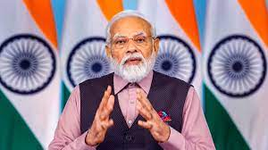

NARENDRA MODI PRIME MINSTER OF INDIA
Narendra Damodardas Modi was born on September 17, 1950, in a small town in northern Gujarat, Vadnagar (Mehsana District). He belongs to the Ghanchi caste, which produces and sells cooking oil, a caste that has been classified as part of the OBCs since the late 1990s. His father traded oil and ran a tea shop, where Narendra, as he has narrated, served customers as a child. He joined the local branch of the RSS at the age of eight, as it was the only extracurricular activity in town. According to the biography penned by M.V. Kamath and K. Randeri, he aspired to renunciation very early on.

Prime Minister Shri Narendra Modi will inaugurate the Global Partnership on Artificial Intelligence (GPAI) Summit, at Bharat Mandapam, New Delhi on 12th December 2023 at around 5 PM.
Supreme Court’s verdict on the abrogation of Article 370 is historic: PM
Supreme Court’s verdict on the abrogation of Article 370 is historic: PM
11 Dec, 2023
The Prime Minister, Shri Narendra Modi said that the Supreme Court’s verdict on the abrogation of Article 370 is historic and constitutionally upholds the decision taken by the Parliament of India on 5th August 2019.
On 27 February 2002, a train with several hundred passengers burned near Godhra, killing approximately 60 people.[k][115] The train carried a large number of Hindu pilgrims who were returning from Ayodhya after a religious ceremony at the site of the demolished Babri Masjid.[116][117] In a public statement, Modi said local Muslims were responsible for the incident.[8][116][118] The next day, the Vishwa Hindu Parishad called for a bandh (general strike) across the state.[119][120] Riots began during the bandh and anti-Muslim violence spread through Gujarat.